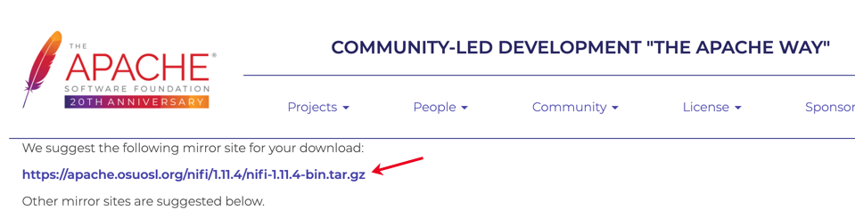
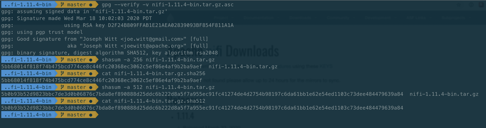
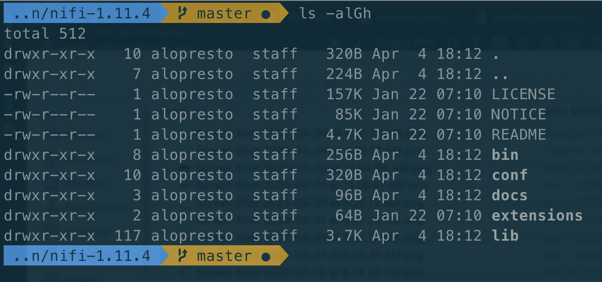
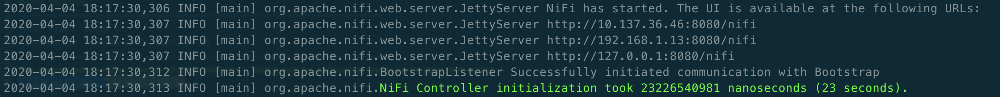
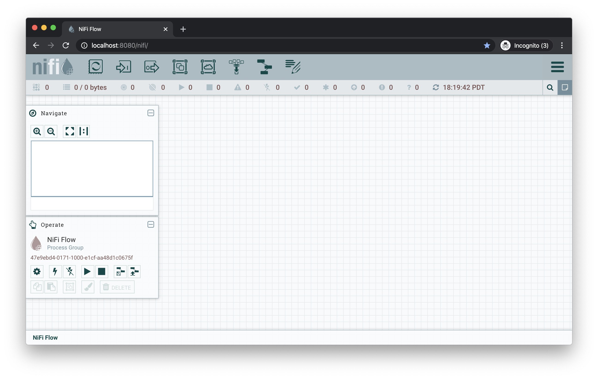

Purpose
The intent of this document is to provide a canonical source of prescriptive instruction sets for common administrator and user tasks using Apache NiFi. It is intended to complement the NiFi Overview, NiFi System Administrator’s Guide, and NiFi User’s Guide. Those documents provide extensive reference information about various features and configuration values, but they do not provide information on how to accomplish tasks.
This document is not intended to be a comprehensive repository of all possible admin or user activities, but rather a collection of well-documented reference activities which can be followed directly or adapted to custom scenarios. This document requires continued updates as application or ecosystem behavior changes, and corrections and improvements where the content is unclear to the community. To contribute to this document, please open a Jira (see further instructions in the Contributor Guide) and submit a pull request (PR).
| This document is provided with no warranty. All steps have been evaluated for correctness to the extent possible by the Apache NiFi community, but no responsibility is assumed for negative impacts on any computer system where these commands are executed. |
Installing Apache NiFi
Apache NiFi is an easy to use, powerful, and reliable system to process and distribute data. It supports powerful and scalable directed graphs of data routing, transformation, and system mediation logic. In addition to NiFi, there is the NiFi Toolkit, a collection of command-line tools which help perform administrative tasks such as interacting with remote services, managing nodes in a cluster, and encrypting sensitive configuration values.
Description |
Instructions on downloading the Apache NiFi application and Toolkit |
Purpose |
To make the application available to run on the specified machine (e.g. a local development environment) |
Starting Point |
Machine running modern OS |
Expected Outcome |
Latest version of Apache NiFi available to run on host with no configuration |
Estimated Duration |
1 minute + download time |
| The following instructions are for installing a single node of NiFi. This guide assumes macOS 10.11.0+ but should work for any modern operating system. *nix commands are used by default, but Windows equivalents are provided where available. |
-
Go to the Apache NiFi Downloads page.
-
Download the latest version of NiFi via the compressed binary files. For example, if the latest version is 1.11.4:
-
nifi-1.11.4-bin.tar.gz[1.2 GB] -
nifi-toolkit-1.11.4-bin.tar.gz[42 MB]
-
-
If you are directed to a mirror page, click the first link on the page to download the respective archive file.
 -
Note that the
nifi-1.11.4-bin.tar.gzand thenifi-toolkit-1.11.4-bin.tar.gzcompressed files are downloaded to yourDownloadsfolder. -
Download the GPG signature and checksums for those files. They are found on the initial download page next to each binary file.
-
gpg --verify -v nifi-1.11.4-bin.tar.gz.asc— Verifies the GPG signature provided on the binary by the Release Manager (RM). See NiFi GPG Guide: Verifying a Release Signature for further details -
shasum -a 256 nifi-1.11.4-bin.tar.gz— Calculates a SHA-256 checksum over the downloaded artifact. This should be compared with the contents ofnifi-1.11.4-bin.tar.gz.sha256for equality -
shasum -a 512 nifi-1.11.4-bin.tar.gz— Calculates a SHA-512 checksum over the downloaded artifact. This should be compared with the contents ofnifi-1.11.4-bin.tar.gz.sha512for equality
-
-
Extract the files from each
tar.gzfile. This can be done by double-clicking on the files in the Finder or running the following commands in the terminal.-
tar -xvzf nifi-1.11.4-bin.tar.gz— Uncompresses thegzipfile and extracts thetararchive contents tonifi-1.11.4/ -
tar -xvzf nifi-toolkit-1.11.4-bin.tar.gz— Uncompresses thegzipfile and extracts thetararchive contents tonifi-toolkit-1.11.4/
-
-
Optionally, move the folders to a more appropriate location.
Building NiFi From Source
Description |
Instructions on downloading the Apache NiFi source code and building the application locally |
Purpose |
To make the application (with potential code modifications) available to run on the specified machine (e.g. a local development environment) |
Starting Point |
Machine running modern OS |
Expected Outcome |
Latest version of Apache NiFi available to run on host with no configuration |
Estimated Duration |
10 - 35 minutes + download time |
| This guide assumes macOS 10.11.0+ but should work for any modern operating system. *nix commands are used by default, but Windows equivalents are provided where available. |
-
Go to the Apache NiFi Downloads page.
-
Download the latest version of NiFi source code via the compressed files. For example, if the latest version is 1.11.4:
-
nifi-1.11.4-source-release.zip[53 MB]
-
-
If you are directed to a mirror page, click the first link on the page to download the respective archive file.
-
Note that the
nifi-1.11.4-source-release.zipcompressed file is downloaded to yourDownloadsfolder. -
Download the GPG signature and checksums for the file. They are found on the initial download page next to the archive file.
-
gpg --verify -v nifi-1.11.4-source-release.zip.asc— Verifies the GPG signature provided on the archive by the Release Manager (RM). See NiFi GPG Guide: Verifying a Release Signature for further details -
shasum -a 256 nifi-1.11.4-source-release.zip— Calculates a SHA-256 checksum over the downloaded artifact. This should be compared with the contents ofnifi-1.11.4-source-release.zip.sha256for equality -
shasum -a 512 nifi-1.11.4-source-release.zip— Calculates a SHA-512 checksum over the downloaded artifact. This should be compared with the contents ofnifi-1.11.4-source-release.zip.sha512for equality
-
-
Extract the files from the
zipfile. This can be done by double-clicking on the file in the Finder or running the following command in the terminal.-
unzip nifi-1.11.4-source-release.zip— Uncompresses thezipfile and extracts the archive contents tonifi-1.11.4/
-
-
Optionally, move the folder to a more appropriate location.
nifi-1.11.4/ % ls -alGh total 328 drwxr-xr-x 25 alopresto staff 800B Apr 6 15:48 ./ drwxr-xr-x 8 alopresto staff 256B Apr 4 18:01 ../ drwxr-xr-x 4 alopresto staff 128B Jan 22 15:10 .github/ -rw-r--r-- 1 alopresto staff 254B Jan 22 15:10 DEPENDENCIES -rw-r--r-- 1 alopresto staff 66K Jan 22 15:10 KEYS -rw-r--r-- 1 alopresto staff 21K Jan 22 15:10 LICENSE -rw-r--r-- 1 alopresto staff 7.1K Jan 22 15:10 NOTICE -rw-r--r-- 1 alopresto staff 9.1K Jan 22 15:10 README.md -rw-r--r-- 1 alopresto staff 3.3K Jan 22 15:10 SECURITY.md drwxr-xr-x 5 alopresto staff 160B Apr 6 15:44 nifi-api/ drwxr-xr-x 8 alopresto staff 256B Apr 6 15:50 nifi-assembly/ drwxr-xr-x 5 alopresto staff 160B Apr 6 15:45 nifi-bootstrap/ drwxr-xr-x 23 alopresto staff 736B Apr 6 15:44 nifi-commons/ drwxr-xr-x 9 alopresto staff 288B Apr 6 15:44 nifi-docker/ drwxr-xr-x 7 alopresto staff 224B Apr 6 15:44 nifi-docs/ drwxr-xr-x 8 alopresto staff 256B Apr 6 15:44 nifi-external/ drwxr-xr-x 5 alopresto staff 160B Apr 6 15:44 nifi-framework-api/ drwxr-xr-x 6 alopresto staff 192B Apr 6 15:44 nifi-maven-archetypes/ drwxr-xr-x 5 alopresto staff 160B Apr 6 15:45 nifi-mock/ drwxr-xr-x 82 alopresto staff 2.6K Apr 6 15:44 nifi-nar-bundles/ drwxr-xr-x 7 alopresto staff 224B Apr 6 15:44 nifi-system-tests/ drwxr-xr-x 14 alopresto staff 448B Apr 6 15:44 nifi-toolkit/ -rw-r--r-- 1 alopresto staff 44K Jan 22 15:10 pom.xml -
Build the NiFi source using Apache Maven from the source root directory (
nifi-1.11.4/) using one of the following commands. For more information, see the NiFi Contributor Guide. Estimated build times for each command on a modern professional laptop are listed below; allow additional time for dependency library downloads on first build.-
mvn clean install— Builds the application (expected time ~30 minutes) -
mvn clean install -T2.0C— Builds the application with multiple parallel threads (expected time ~15 minutes) -
mvn clean install -T2.0C -DskipTests— Builds the application with multiple parallel threads and unit tests disabled (expected time ~6 minutes)nifi-1.11.4/ % mvn clean install -T2.0C -DskipTests ... ------------------------------------------------------------------------ Reactor Summary for nifi 1.11.4: nifi ............................................... SUCCESS [ 0.834 s] nifi-api ........................................... SUCCESS [ 8.799 s] nifi-framework-api ................................. SUCCESS [ 12.020 s] nifi-commons ....................................... SUCCESS [ 0.253 s] nifi-utils ......................................... SUCCESS [ 16.029 s] nifi-properties .................................... SUCCESS [ 6.863 s] nifi-security-utils ................................ SUCCESS [ 14.682 s] nifi-nar-bundles ................................... SUCCESS [ 0.279 s] nifi-framework-bundle .............................. SUCCESS [ 0.358 s] nifi-framework ..................................... SUCCESS [ 1.538 s] nifi-properties-loader ............................. SUCCESS [ 14.153 s] ... nifi-system-test-suite ............................. SUCCESS [ 3.999 s] ------------------------------------------------------------------------ BUILD SUCCESS ------------------------------------------------------------------------ Total time: 06:17 min (Wall Clock) Finished at: 2020-04-06T15:50:35-07:00 ------------------------------------------------------------------------
-
-
The resulting application is available in the build directory (for 1.11.14:
nifi-assembly/target/nifi-1.11.4-bin/nifi-1.11.4).-
cd nifi-assembly/target/nifi-1.11.4-bin/nifi-1.11.4— Changes directory to the application root directorynifi-1.11.4/nifi-assembly/target/nifi-1.11.4-bin/nifi-1.11.4/ % ls -alGh drwxr-xr-x 10 alopresto staff 320B Apr 6 15:50 ./ drwxr-xr-x 3 alopresto staff 96B Apr 6 15:50 ../ -rw-r--r-- 1 alopresto staff 157K Jan 22 07:10 LICENSE -rw-r--r-- 1 alopresto staff 85K Jan 22 07:10 NOTICE -rw-r--r-- 1 alopresto staff 4.7K Jan 22 07:10 README drwxr-xr-x 8 alopresto staff 256B Apr 6 15:50 bin/ drwxr-xr-x 10 alopresto staff 320B Apr 6 15:50 conf/ drwxr-xr-x 3 alopresto staff 96B Apr 6 15:50 docs/ drwxr-xr-x 2 alopresto staff 64B Jan 22 07:10 extensions/ drwxr-xr-x 116 alopresto staff 3.6K Apr 6 15:50 lib/
-
Starting NiFi
Description |
Instructions on running the Apache NiFi application |
Purpose |
To configure and run the application on the local machine |
Starting Point |
|
Expected Outcome |
Latest version of Apache NiFi running on host with minimal configuration |
Estimated Duration |
1 minute |
-
Start in the directory where NiFi was downloaded and unarchived or built. For this section, the directory
/etc/nifi-1.11.4will be used. This directory will be referred to as the "NiFi home directory" and can be set explicitly (this is not done automatically by NiFi nor is it required).-
export NIFI_HOME="/etc/nifi-1.11.4/"— Sets an environment variable ($NIFI_HOME) which references the installation directory (optional) -
cd /etc/nifi-1.11.4— Changes the terminal to the NiFi home directory -
ls -alGh— Lists the contents of the directory (optional)
-
-
At this point, NiFi can be started with default configuration values (available at
http://localhost:8080/nifi).-
./bin/nifi.sh start— Starts NiFi. (It takes some time for NiFi to finish scheduling all components. Issuingbin/nifi.sh startexecutes thenifi.shscript that starts NiFi in the background and then exits. If you wantnifi.shto wait for NiFi to finish scheduling all components before exiting, use the--wait-for-initflag with an optional timeout specified in seconds:bin/nifi.sh start --wait-for-init 120. If the timeout is not provided, the default timeout of 15 minutes will be used.) -
tail -f logs/nifi-app.log— Tails the application log which will indicate when the application has started
-
-
Navigate to the URL in a web browser (
http://localhost:8080/nifior any listed in thenifi-app.logoutput).
Modification of Configuration Values
Many web applications run on :8080 by default, so this port may already be occupied on the machine. This section will demonstrate changing the port used by NiFi. All of the following commands are run from $NIFI_HOME.
-
Ensure the application is not running.
-
ps -ef | grep nifi— Checks the running system for any processes referencingnifi(optional) -
./bin/nifi.sh status— Determines if the specified instance is running (optional) -
./bin/nifi.sh stop— Stops the specified instance
-
-
Open the main configuration file for NiFi (
nifi.properties). Any text editor is sufficient for this (Sublime Text, Atom, vi, nano, etc.)-
$EDITOR conf/nifi.properties— Opens thenifi.propertiesfile for editing
-
-
Change
nifi.web.http.port=8080→nifi.web.http.port=7777— Sets the HTTP port to a new valueSetting a port between 1 - 1024 requires rootaccess on *nix systems -
Save and close the file.
-
Start NiFi again
-
./bin/nifi.sh start— Starts NiFi -
tail -f logs/nifi-app.log— Tails the application log
-
-
Open a web browser to the new address (
http://localhost:7777/nifi)
Securing NiFi with TLS
Apache NiFi requires Transport Layer Security (TLS) configuration for multiple reasons.
-
To encrypt communication between clients and server (this provides confidentialty and integrity over transmitted data)
-
To prevent malicious users from intercepting data or impersonating the server
-
To enable any authentication & authorization mechanisms
NiFi intentionally does not allow any authentication or authorization features over plaintext HTTP. Without the confidentiality and integrity provided by TLS and the user & group access controls, any malicious entity can intercept and modify NiFi API requests, corrupt and steal data, and otherwise interfere with the NiFi instance. Because of NiFi’s robust feature set, this can even lead to complete control over the host running NiFi. For more information, see Administrator’s Guide: Security Configuration.
Securing NiFi with Provided Certificates
| This section assumes an enterprise IT department or other mechanism to provide signed certificates. |
Description |
Instructions on enabling Transport Layer Security (TLS) for the Apache NiFi application using provided certificates |
Purpose |
Securing NiFi with TLS protects data in motion and is required to enable authentication & authorization |
Starting Point |
|
Expected Outcome |
Latest version of Apache NiFi running on host over TLS with client certificate authentication and authorization enabled and a single configured user |
Estimated Duration |
10 minutes |
In this scenario, a commercial CA is used, but it could also be an enterprise CA with an internal CA certificate which is configured to be trusted by corporate machines. There are many commercial vendors providing signed certificates. For this example, TinyCert is used as it is free. Let’s Encrypt is another free provider, but requires verification of hostname ownership which involves additional steps not shown here.
For this scenario, all certificates and keys will be in Privacy-Enhanced Mail (PEM) format. This is a common format for certificates and keys. It uses Base64 encoding for the contents of the files, and can be transmitted across various mediums and storage mechanisms easily. Plain text editors can be used to view the contents, and the openssl and keytool tools can parse the contents.
Example PEM file:
% cat nifi.pem
-----BEGIN CERTIFICATE-----
MIIFDzCCA/egAwIBAgICURswDQYJKoZIhvcNAQELBQAwgZMxCzAJBgNVBAYTAlVT
MQswCQYDVQQIDAJDQTEVMBMGA1UEBwwMU2FudGEgTW9uaWNhMRcwFQYDVQQKDA5B
cGFjaGUgTmlGaSBDQTErMCkGA1UECwwiU2VjdXJlIERpZ2l0YWwgQ2VydGlmaWNh
dGUgU2lnbmluZzEaMBgGA1UEAwwRQXBhY2hlIE5pRmkgQ0EgQ0EwHhcNMjAwNDA1
MjI0MTQ5WhcNMjEwNDA1MjI0MTQ5WjCBgjELMAkGA1UEBhMCVVMxCzAJBgNVBAgM
AkNBMRUwEwYDVQQHDAxTYW50YSBNb25pY2ExFzAVBgNVBAoMDkFwYWNoZSBOaUZp
IENBMSAwHgYDVQQLDBdBcGFjaGUgTmlGaSBXYWxrdGhyb3VnaDEUMBIGA1UEAwwL
c2VjdXJlLm5pZmkwggEiMA0GCSqGSIb3DQEBAQUAA4IBDwAwggEKAoIBAQDJySMX
H+Fco7WbXIKQ1u1RrMd/FE7zl/69X/7Da6x4c6jlI8fy3MbxZjqFnDsJpNuIkPVv
yHcGCm8Lkw70DbCTUkW60MlVM5r4CkWhVgOd1RD34QzhgkcKjg29uOuCYa+FM78q
E5Qp64wbLpDXHpxmm4/Qv97RHdTqynqRzYs6g+VyCn14nXuqJp0533F1T2khtK4z
BrIMZj6VpWyyCFmJjmrW37GbcRuxMbtbgj+4mzD0Eew6/96R9A7Wxlq0QMuRTz12
ie9xSi/GyzQV2r9gRzxuIo8qshMIq2d/1pipIgWNj2LzEXXoEbfHy7Jwm78e1G/+
PV/ULIx+QL4h9Ni/AgMBAAGjggF6MIIBdjAJBgNVHRMEAjAAMB0GA1UdDgQWBBTy
gw/GBUrqMI80gYpdlh3NNfwrBzAfBgNVHSMEGDAWgBRkovbp8RqbD0BeDyPcrBYg
a1rzdDARBglghkgBhvhCAQEEBAMCBPAwCwYDVR0PBAQDAgP4MDsGA1UdJQQ0MDIG
CCsGAQUFBwMBBggrBgEFBQcDAgYIKwYBBQUHAwMGCCsGAQUFBwMEBggrBgEFBQcD
CDBtBggrBgEFBQcBAQRhMF8wLAYIKwYBBQUHMAGGIGh0dHA6Ly9vY3NwLnRpbnlj
ZXJ0Lm9yZy9jYS0yNDA1MC8GCCsGAQUFBzAChiNodHRwOi8vYWlhLnRpbnljZXJ0
Lm9yZy9jYS0yNDA1LmNydDA0BgNVHR8ELTArMCmgJ6AlhiNodHRwOi8vY3JsLnRp
bnljZXJ0Lm9yZy9jYS0yNDA1LmNybDAnBgNVHREEIDAeggtzZWN1cmUubmlmaYcE
fwAAAYIJbG9jYWxob3N0MA0GCSqGSIb3DQEBCwUAA4IBAQDAICxyfgm2eBa8J3+s
D2QpIQgOc8fgMYeqWwgk5rHbDk8IdkH9XloAuSzxi/weZt3PQQOdNHeeOCOXEWAf
n0X1SMGFUvLForHgArGolt9uFofvh2sE2q3/wSBI6J2940dYwZOPAlf5m7fNpcbz
WCJZGt7Pn/VWm3+uPZrMAj+GzsvR9NVMZwK/eAFM4OKNCeiLRPv1qLARYVqvLJFK
t9dlCrHKyDLIaUbG2Lcw6Yt7SBU7nAnobuYqImRRXm/bE0xwb9X9fD8UzJfmryOT
Fvz4hlntwk1fgvG1n4SrZgFNZpg1awN5tXbwiOdisTwslQ49C4QCH5iEWCM1HExL
A5GR
-----END CERTIFICATE-----Example parsed contents:
% openssl x509 -in nifi.pem -text -noout
Certificate:
Data:
Version: 3 (0x2)
Serial Number: 20763 (0x511b)
Signature Algorithm: sha256WithRSAEncryption
Issuer: C=US, ST=CA, L=Santa Monica, O=Apache NiFi CA, OU=Secure Digital Certificate Signing, CN=Apache NiFi CA CA
Validity
Not Before: Apr 5 22:41:49 2020 GMT
Not After : Apr 5 22:41:49 2021 GMT
Subject: C=US, ST=CA, L=Santa Monica, O=Apache NiFi CA, OU=Apache NiFi Walkthrough, CN=secure.nifi
Subject Public Key Info:
Public Key Algorithm: rsaEncryption
Public-Key: (2048 bit)
Modulus:
00:c9:c9:23:17:1f:e1:5c:a3:b5:9b:5c:82:90:d6:
ed:51:ac:c7:7f:14:4e:f3:97:fe:bd:5f:fe:c3:6b:
ac:78:73:a8:e5:23:c7:f2:dc:c6:f1:66:3a:85:9c:
3b:09:a4:db:88:90:f5:6f:c8:77:06:0a:6f:0b:93:
0e:f4:0d:b0:93:52:45:ba:d0:c9:55:33:9a:f8:0a:
45:a1:56:03:9d:d5:10:f7:e1:0c:e1:82:47:0a:8e:
0d:bd:b8:eb:82:61:af:85:33:bf:2a:13:94:29:eb:
8c:1b:2e:90:d7:1e:9c:66:9b:8f:d0:bf:de:d1:1d:
d4:ea:ca:7a:91:cd:8b:3a:83:e5:72:0a:7d:78:9d:
7b:aa:26:9d:39:df:71:75:4f:69:21:b4:ae:33:06:
b2:0c:66:3e:95:a5:6c:b2:08:59:89:8e:6a:d6:df:
b1:9b:71:1b:b1:31:bb:5b:82:3f:b8:9b:30:f4:11:
ec:3a:ff:de:91:f4:0e:d6:c6:5a:b4:40:cb:91:4f:
3d:76:89:ef:71:4a:2f:c6:cb:34:15:da:bf:60:47:
3c:6e:22:8f:2a:b2:13:08:ab:67:7f:d6:98:a9:22:
05:8d:8f:62:f3:11:75:e8:11:b7:c7:cb:b2:70:9b:
bf:1e:d4:6f:fe:3d:5f:d4:2c:8c:7e:40:be:21:f4:
d8:bf
Exponent: 65537 (0x10001)
X509v3 extensions:
X509v3 Basic Constraints:
CA:FALSE
X509v3 Subject Key Identifier:
F2:83:0F:C6:05:4A:EA:30:8F:34:81:8A:5D:96:1D:CD:35:FC:2B:07
X509v3 Authority Key Identifier:
keyid:64:A2:F6:E9:F1:1A:9B:0F:40:5E:0F:23:DC:AC:16:20:6B:5A:F3:74
Netscape Cert Type:
SSL Client, SSL Server, S/MIME, Object Signing
X509v3 Key Usage:
Digital Signature, Non Repudiation, Key Encipherment, Data Encipherment, Key Agreement
X509v3 Extended Key Usage:
TLS Web Server Authentication, TLS Web Client Authentication, Code Signing, E-mail Protection, Time Stamping
Authority Information Access:
OCSP - URI:http://ocsp.tinycert.org/ca-2405
CA Issuers - URI:http://aia.tinycert.org/ca-2405.crt
X509v3 CRL Distribution Points:
Full Name:
URI:http://crl.tinycert.org/ca-2405.crl
X509v3 Subject Alternative Name:
DNS:secure.nifi, IP Address:127.0.0.1, DNS:localhost
Signature Algorithm: sha256WithRSAEncryption
c0:20:2c:72:7e:09:b6:78:16:bc:27:7f:ac:0f:64:29:21:08:
0e:73:c7:e0:31:87:aa:5b:08:24:e6:b1:db:0e:4f:08:76:41:
fd:5e:5a:00:b9:2c:f1:8b:fc:1e:66:dd:cf:41:03:9d:34:77:
9e:38:23:97:11:60:1f:9f:45:f5:48:c1:85:52:f2:c5:a2:b1:
e0:02:b1:a8:96:df:6e:16:87:ef:87:6b:04:da:ad:ff:c1:20:
48:e8:9d:bd:e3:47:58:c1:93:8f:02:57:f9:9b:b7:cd:a5:c6:
f3:58:22:59:1a:de:cf:9f:f5:56:9b:7f:ae:3d:9a:cc:02:3f:
86:ce:cb:d1:f4:d5:4c:67:02:bf:78:01:4c:e0:e2:8d:09:e8:
8b:44:fb:f5:a8:b0:11:61:5a:af:2c:91:4a:b7:d7:65:0a:b1:
ca:c8:32:c8:69:46:c6:d8:b7:30:e9:8b:7b:48:15:3b:9c:09:
e8:6e:e6:2a:22:64:51:5e:6f:db:13:4c:70:6f:d5:fd:7c:3f:
14:cc:97:e6:af:23:93:16:fc:f8:86:59:ed:c2:4d:5f:82:f1:
b5:9f:84:ab:66:01:4d:66:98:35:6b:03:79:b5:76:f0:88:e7:
62:b1:3c:2c:95:0e:3d:0b:84:02:1f:98:84:58:23:35:1c:4c:
4b:03:91:91The prerequisites for the scenario (issued by the IT department):
-
A signed NiFi server certificate for the specified host (
secure.nififor this example) in PEM format (nifi.pem) -
The matching private key in PEM format (
nifi.key) -
A signed client certificate for the specified user (
CN=my_username, …for this example) in PEM format (client.pem) -
The matching private key in PEM format (
client.key) -
The CA certificate in PEM format (
cacert.pem)
The end result will consist of a self-signed external CA (the root), a keystore and truststore containing the necessary certificates for the NiFi instance to operate, and a client certificate for a human user to access NiFi.
Depending on the version of Java used, some commands below may display a warning Warning:
The JKS keystore uses a proprietary format. It is recommended to migrate to PKCS12 which is an industry standard format using "keytool -importkeystore -srckeystore keystore.jks -destkeystore keystore.jks -deststoretype pkcs12". As of version 1.11.4, NiFi still handles JKS keystores better than PKCS12 keystores, but either is acceptable. This may change in future versions. PKCS12 keystores are used for client certificates and keys as browsers prefer loading this format.
|
-
Start in the directory where NiFi was downloaded and unarchived. For this section, the directory
/etc/nifi-1.11.4will be used. This directory will be referred to as the "NiFi home directory" and can be set explicitly (this is not done automatically by NiFi nor is it required).-
export NIFI_HOME="/etc/nifi-1.11.4/"— Sets an environment variable ($NIFI_HOME) which references the installation directory (optional) -
cd /etc/nifi-1.11.4— Changes the terminal to the NiFi home directory -
ls -alGh— Lists the contents of the directory (optional)
-
-
Determine if the server certificate (
nifi.pem) contains the complete certificate chain or just the server certificate. If the sequence-----BEGIN CERTIFICATE-----occurs only once, this is just the server certificate. If it occurs multiple times, the certificate chain is present. If the certificate chain is present, continue with Step 4. If it is not present, continue to Step 3.-
cat nifi.pem— Prints the Base64-encoded contents
-
-
Concatenate the server certificate and CA certificate to form the certificate chain.
-
cat cacert.pem >> nifi.pem— Concatenates the CA certificate to the NiFi server certificate in the proper order
-
-
Form the PKCS12 keystore from the certificate chain and private key.
-
openssl pkcs12 -export -out nifi.p12 -inkey nifi.key -in nifi.pem -name nifi-key— Generates the PKCS12 keystore containing the private key and certificate chain under the aliasnifi-key. The command will prompt for an export password. Choose a secure password and enter it twice for confirmation (for this scenario, the bad examplepasswordpasswordis used) -
keytool -list -v -keystore nifi.p12— Verifies the contents of the PKCS12 keystore (optional). This command will prompt for the same password entered on the previous stepThe certificate chain length is 2, starting with the server certificate and including the CA certificate. keytool -list -v -keystore nifi.p12 Enter keystore password: Keystore type: PKCS12 Keystore provider: SUN Your keystore contains 1 entry Alias name: 1 Creation date: Apr 5, 2020 Entry type: PrivateKeyEntry Certificate chain length: 2 Certificate[1]: Owner: CN=secure.nifi, OU=Apache NiFi Walkthrough, O=Apache NiFi CA, L=Santa Monica, ST=CA, C=US Issuer: CN=Apache NiFi CA CA, OU=Secure Digital Certificate Signing, O=Apache NiFi CA, L=Santa Monica, ST=CA, C=US Serial number: 511b Valid from: Sun Apr 05 15:41:49 PDT 2020 until: Mon Apr 05 15:41:49 PDT 2021 Certificate fingerprints: SHA1: C7:DD:26:7F:8E:25:45:2E:02:FE:34:FA:89:42:D8:BE:5B:88:AB:2D SHA256: 6E:A6:6C:BB:88:E3:24:99:5C:EB:C7:B8:02:D1:30:C4:AC:6D:0C:F2:40:46:DA:CB:6A:15:13:B7:49:40:FA:99 Signature algorithm name: SHA256withRSA Subject Public Key Algorithm: 2048-bit RSA key Version: 3 Extensions: #1: ObjectId: 1.3.6.1.5.5.7.1.1 Criticality=false AuthorityInfoAccess [ [ accessMethod: ocsp accessLocation: URIName: http://ocsp.tinycert.org/ca-2405 , accessMethod: caIssuers accessLocation: URIName: http://aia.tinycert.org/ca-2405.crt ] ] #2: ObjectId: 2.5.29.35 Criticality=false AuthorityKeyIdentifier [ KeyIdentifier [ 0000: 64 A2 F6 E9 F1 1A 9B 0F 40 5E 0F 23 DC AC 16 20 d.......@^.#... 0010: 6B 5A F3 74 kZ.t ] ] #3: ObjectId: 2.5.29.19 Criticality=false BasicConstraints:[ CA:false PathLen: undefined ] #4: ObjectId: 2.5.29.31 Criticality=false CRLDistributionPoints [ [DistributionPoint: [URIName: http://crl.tinycert.org/ca-2405.crl] ]] #5: ObjectId: 2.5.29.37 Criticality=false ExtendedKeyUsages [ serverAuth clientAuth codeSigning emailProtection timeStamping ] #6: ObjectId: 2.5.29.15 Criticality=false KeyUsage [ DigitalSignature Non_repudiation Key_Encipherment Data_Encipherment Key_Agreement ] #7: ObjectId: 2.16.840.1.113730.1.1 Criticality=false NetscapeCertType [ SSL client SSL server S/MIME Object Signing ] #8: ObjectId: 2.5.29.17 Criticality=false SubjectAlternativeName [ DNSName: secure.nifi IPAddress: 127.0.0.1 DNSName: localhost ] #9: ObjectId: 2.5.29.14 Criticality=false SubjectKeyIdentifier [ KeyIdentifier [ 0000: F2 83 0F C6 05 4A EA 30 8F 34 81 8A 5D 96 1D CD .....J.0.4..]... 0010: 35 FC 2B 07 5.+. ] ] Certificate[2]: Owner: CN=Apache NiFi CA CA, OU=Secure Digital Certificate Signing, O=Apache NiFi CA, L=Santa Monica, ST=CA, C=US Issuer: CN=Apache NiFi CA CA, OU=Secure Digital Certificate Signing, O=Apache NiFi CA, L=Santa Monica, ST=CA, C=US Serial number: 0 Valid from: Mon Feb 08 20:24:06 PST 2016 until: Thu Feb 05 20:24:06 PST 2026 Certificate fingerprints: SHA1: E9:CA:EF:26:C7:2A:AF:7A:FD:BC:97:12:ED:F5:6B:3B:79:40:D2:A3 SHA256: 4C:0A:2F:C4:D3:CC:B5:A8:0E:0B:95:EE:0C:E6:60:7C:85:78:7A:58:77:BB:87:58:12:9B:D1:E4:BA:E0:9B:67 Signature algorithm name: SHA256withRSA Subject Public Key Algorithm: 2048-bit RSA key Version: 3 Extensions: #1: ObjectId: 2.5.29.19 Criticality=true BasicConstraints:[ CA:true PathLen:2147483647 ] #2: ObjectId: 2.5.29.31 Criticality=false CRLDistributionPoints [ [DistributionPoint: [URIName: http://crl.tinycert.org/ca-2405.crl] ]] #3: ObjectId: 2.5.29.18 Criticality=false IssuerAlternativeName [ RFC822Name: andy@andylopresto.com ] #4: ObjectId: 2.5.29.15 Criticality=true KeyUsage [ DigitalSignature Key_Encipherment Key_Agreement Key_CertSign ] #5: ObjectId: 2.5.29.17 Criticality=false SubjectAlternativeName [ RFC822Name: andy@andylopresto.com ] #6: ObjectId: 2.5.29.14 Criticality=false SubjectKeyIdentifier [ KeyIdentifier [ 0000: 64 A2 F6 E9 F1 1A 9B 0F 40 5E 0F 23 DC AC 16 20 d.......@^.#... 0010: 6B 5A F3 74 kZ.t ] ] ******************************************* *******************************************
-
-
Convert the PKCS12 keystore for the NiFi instance into the Java KeyStore file (
keystore.jks). PKCS12 keystores are usable by NiFi, but JKS format is handled more robustly and causes fewer edge cases. JKS keystores cannot be formed directly from PEM files, so the PKCS12 keystore serves as an intermediate form.-
keytool -importkeystore -srckeystore nifi.p12 -srcstoretype pkcs12 -srcalias nifi-key -destkeystore keystore.jks -deststoretype jks -destalias nifi-key— Converts the PKCS12 keystore to a JKS keystore. This command will prompt for a new keystore password twice, then prompt for the password set on the PKCS12 keystore from the previous step
-
-
Convert the CA certificate into the NiFi truststore (
truststore.jks) to allow trusted incoming connections.-
keytool -importcert -alias nifi-cert -file cacert.pem -keystore truststore.jks— Imports the CA certificate into the truststore. This command will prompt for a new truststore password twice% keytool -importcert -alias nifi-cert -file cacert.pem -keystore truststore.jks Enter keystore password: Re-enter new password: Owner: CN=Apache NiFi CA CA, OU=Secure Digital Certificate Signing, O=Apache NiFi CA, L=Santa Monica, ST=CA, C=US Issuer: CN=Apache NiFi CA CA, OU=Secure Digital Certificate Signing, O=Apache NiFi CA, L=Santa Monica, ST=CA, C=US Serial number: 0 Valid from: Mon Feb 08 20:24:06 PST 2016 until: Thu Feb 05 20:24:06 PST 2026 Certificate fingerprints: SHA1: E9:CA:EF:26:C7:2A:AF:7A:FD:BC:97:12:ED:F5:6B:3B:79:40:D2:A3 SHA256: 4C:0A:2F:C4:D3:CC:B5:A8:0E:0B:95:EE:0C:E6:60:7C:85:78:7A:58:77:BB:87:58:12:9B:D1:E4:BA:E0:9B:67 Signature algorithm name: SHA256withRSA Subject Public Key Algorithm: 2048-bit RSA key Version: 3 Extensions: #1: ObjectId: 2.5.29.19 Criticality=true BasicConstraints:[ CA:true PathLen:2147483647 ] #2: ObjectId: 2.5.29.31 Criticality=false CRLDistributionPoints [ [DistributionPoint: [URIName: http://crl.tinycert.org/ca-2405.crl] ]] #3: ObjectId: 2.5.29.18 Criticality=false IssuerAlternativeName [ RFC822Name: andy@andylopresto.com ] #4: ObjectId: 2.5.29.15 Criticality=true KeyUsage [ DigitalSignature Key_Encipherment Key_Agreement Key_CertSign ] #5: ObjectId: 2.5.29.17 Criticality=false SubjectAlternativeName [ RFC822Name: andy@andylopresto.com ] #6: ObjectId: 2.5.29.14 Criticality=false SubjectKeyIdentifier [ KeyIdentifier [ 0000: 64 A2 F6 E9 F1 1A 9B 0F 40 5E 0F 23 DC AC 16 20 d.......@^.#... 0010: 6B 5A F3 74 kZ.t ] ] Trust this certificate? [no]: yes Certificate was added to keystore
-
-
Optionally, move the
keystore.jksandtruststore.jksfiles into theconf/directory. This step is not required, but helps with organization. -
Configure the
nifi.propertiesfile with the necessary values. This includes setting the hostname, ports, and keystore and truststore paths and passwords.-
$EDITOR conf/nifi.properties— Opens thenifi.propertiesfile in a text editor -
Update the following lines:
-
nifi.remote.input.host=→nifi.remote.input.host=secure.nifi -
nifi.remote.input.secure=false→nifi.remote.input.secure=true -
nifi.remote.input.socket.port=→nifi.remote.input.socket.port=10443 -
nifi.web.http.port=8080→nifi.web.http.port= -
nifi.web.https.host=→nifi.web.https.host=secure.nifi -
nifi.web.https.port=→nifi.web.https.port=9443 -
nifi.security.keystore=→nifi.security.keystore=./conf/keystore.jks -
nifi.security.keystoreType=→nifi.security.keystoreType=jks -
nifi.security.keystorePasswd=→nifi.security.keystorePasswd=passwordpassword -
nifi.security.truststore=→nifi.security.truststore=./conf/truststore.jks -
nifi.security.truststoreType=→nifi.security.truststoreType=jks -
nifi.security.truststorePasswd=→nifi.security.truststorePasswd=passwordpassword
-
-
-
Generate the client certificate keystore from the client certificate and key.
-
openssl pkcs12 -export -out CN=my_username.p12 -inkey client.key -in client.pem— Creates the PKCS12 keystore containing the client certificate and private key. This command prompts for an export password twice
-
Deploying a NiFi Cluster
Apache NiFi can run in either standalone or clustered mode. A standalone node is often sufficient for dataflow operations, but in a production or high-volume environment, a cluster is more performant and resilient. For more information, see NiFi Administrator’s Guide: Clustering.
Configuring a Host to Resolve Arbitrary DNS Hostnames
This section provides instructions to configure a single host machine to resolve dynamic hostnames via DNS using a tool called dnsmasq. This is useful if deploying a NiFi cluster to a single host machine to logically separate nodes running side-by-side. There are many options to achieve this outcome; this is one approach.
|
Description |
Instructions on installing and configuring dynamic DNS hostname resolution |
Purpose |
A NiFi cluster with multiple nodes needs to communicate between them and if all nodes are |
Starting Point |
N/A |
Expected Outcome |
The host machine can resolve arbitrary DNS hostnames without impacting normal network connectivity |
Helpful Reading |
N/A |
Estimated Duration |
5 minutes |
Machines resolve DNS hostnames (e.g. nifi.apache.org) to IP addresses (95.216.24.32). Each node in a NiFi cluster needs a hostname (e.g. node1.nificluster.com) to use while serving the UI/API and to communicate with peer nodes. When deploying a cluster of multiple nodes on the same physical/virtual host, each node can receive a different, non-conflicting set of ports, but the hostname (localhost) would conflict. By allowing arbitrary hostname resolution, each node can reside side-by-side but be identified uniquely.
For this guide, any hostname which ends in .nifi will resolve to localhost.
Prerequisites:
-
A *nix (or similar) operating system
-
A package manager (e.g.
apt-get,yum,brew). The instructions below usebrew; substitute the command for the relevant package manager inline
The end result will resolve *.nifi hostnames to the local machine and all other names with the pre-existing DNS resolution services.
-
Install and configure dnsmasq.
-
Install dnsmasq.
-
brew install dnsmasqhost@macbook ~ % brew install dnsmasq ==> Fetching dnsmasq ==> Downloading https://ghcr.io/v2/homebrew/core/dnsmasq/manifests/2.89 ########################################################################## 100.0% ==> Downloading https://ghcr.io/v2/homebrew/core/dnsmasq/blobs/sha256:490265bd8d3e8392380fff3b0fbb4caf65f918366b5cf8c613372d21844860aa ==> Downloading from https://pkg-containers.githubusercontent.com/ghcr1/blobs/sha256:490265bd8d3e8392380fff3b0fbb4caf65f918366b5cf8c61... ########################################################################## 100.0% ==> Pouring dnsmasq--2.89.arm64_ventura.bottle.tar.gz ==> Caveats To start dnsmasq now and restart at startup: sudo brew services start dnsmasq Or, if you don't want/need a background service you can just run: /opt/homebrew/opt/dnsmasq/sbin/dnsmasq --keep-in-foreground -C /opt/homebrew/etc/dnsmasq.conf -7 /opt/homebrew/etc/dnsmasq.d,*.conf ==> Summary 🍺 /opt/homebrew/Cellar/dnsmasq/2.89: 10 files, 646.3KB
-
-
Start dnsmasq using the service manager.
-
sudo brew services start dnsmasq
-
-
Make a new file
development.confin/opt/homebrew/etc/dnsmasq.d/. This file defines the address pattern to resolve. Here,$EDITORis an environment variable defined as path to a text editor. You can use any text editor of your choice (Sublime Text, Atom, vi, emacs, nano, etc.).-
$EDITOR /opt/homebrew/etc/dnsmasq.d/development.conf— creates and opensdevelopment.conffile for editing
-
-
Populate the
development.confwith the address pattern. Theaddress/line defines the pattern and the# Directline is a comment describing the pattern.-
Add the following lines to
development.conf:# Test NiFi instances address=/.nifi/127.0.0.1 # Direct any hostnames ending in .nifi to 127.0.0.1
-
-
Create a directory
resolverin/etcdirectory.-
sudo mkdir /etc/resolver— creates 'resolver' directory
-
-
Create a new file
nifiin/etc/resolver/. This filename must match the top-level domain (TLD) to be resolved (e.g.hostname.nifi→nifi,hostname.example→example).-
sudo $EDITOR /etc/resolver/nifi
-
-
Populate the
nififile and register a new DNS resolver (dnsmasqrunning on this host) with the OS.-
Add the following line to
nifi:nameserver 127.0.0.1
-
-
Restart
dnsmasq:-
sudo brew services restart dnsmasq
-
-
-
To test successful deployment of the new DNS resolver, ping two addresses. One is an external site not hosted by this machine to demonstrate that regular DNS functionality remains, and the other is a new hostname which this machine will respond to.
-
Ping an existing website hosted externally (https://nifi.apache.org).
-
ping -c 1 nifi.apache.orgPING nifi.apache.org (95.216.24.32): 56 data bytes 64 bytes from 95.216.24.32: icmp_seq=0 ttl=48 time=189.600 msHere the
nifi.apache.orgresolution is done by the system’s default DNS resolver and resolves to95.216.24.32(not this machine).
-
-
Ping a non-existent website which this machine should resolve locally (http://imaginary.node.nifi).
-
ping -c 1 imaginary.node.nifiPING imaginary.node.nifi (127.0.0.1): 56 data bytes 64 bytes from 127.0.0.1: icmp_seq=0 ttl=64 time=0.026 msHere the
*.nifiresolution redirects to the host machine’s IP (127.0.0.1) which was configured via the/etc/resolver/nififile.
-
-
Securing NiFi with mTLS
A secure setup of a NiFi cluster involves a set of keystores and truststores to facilitate secure communication between cluster nodes via the mTLS protocol. Each cluster node will use a keystore containing a private key and certificate used to identify itself, and a truststore with a certificate that specifies trusted remote endpoints. Commonly, the truststore will specify a single certificate authority, which can enable a trust relationship with any certificate signed by the authority.
Multiple options are available to create the needed keystores and truststores:
In the special case of a single node NiFi development instance, automatic self-signed certificate generation has been available in NiFi since version 1.14.0. This utility performs the needed certificate generation and configuration on the first run of a freshly built NiFi assembly.
Manual Keystore Generation
Manual use of openssl and/or the Java keytool utility can also help to provide the keystores and truststores to secure NiFi cluster communications. While use of one of the previously mentioned alternatives is encouraged, these commands are documented for informational purposes, and as an additional alternative if needed.
The following OpenSSL version is known to support generation of certificates with "subjectAltName": OpenSSL 3.0.7 1 Nov 2022. The following OpenSSL version is known not to support generation of certificates with "subjectAltName": LibreSSL 2.8.3.
|
In the below instructions, values for subjectAltName IP and subjectAltName DNS should be substituted as appropriate for the use case. The instructions intend only to convey syntax.
|
| Many of the below commands will request a password that will protect the data generated by the command. Choose a password appropriately strong for the use case. Protect the security of the passwords and generated files in a manner appropriate for the use case. |
-
Generate certificate authority key.
-
openssl genrsa -aes256 -out ca.key 3072
-
-
Generate cluster node key (one for each node).
-
openssl genrsa -aes256 -out nifi1.key 3072 -
openssl genrsa -aes256 -out nifi2.key 3072 -
…
-
-
Generate certificate authority certificate.
-
openssl req -new -x509 -days 1461 -key ca.key -sha256 -out ca.cer -subj "/CN=nifi-ca/OU=nifi/"
-
-
Generate cluster node certificate signing request (one for each node).
-
openssl req -new -key nifi1.key -out nifi1.csr -subj "/CN=nifi1/OU=nifi/" -addext "subjectAltName = IP:192.168.1.1,DNS:localhost" -
openssl req -new -key nifi2.key -out nifi2.csr -subj "/CN=nifi2/OU=nifi/" -addext "subjectAltName = IP:192.168.1.2,DNS:localhost" -
…
-
-
Generate cluster node certificate, using certificate authority key (one for each node).
-
openssl x509 -req -in nifi1.csr -CA ca.cer -CAkey ca.key -CAcreateserial -out nifi1.cer -days 365 -sha256 -copy_extensions=copyall -
openssl x509 -req -in nifi2.csr -CA ca.cer -CAkey ca.key -CAcreateserial -out nifi1.cer -days 365 -sha256 -copy_extensions=copyall -
…
-
-
Generate cluster node certificate chain (one for each node).
-
cat nifi1.cer ca.cer >nifi1.chain.cer -
cat nifi2.cer ca.cer >nifi2.chain.cer -
…
-
-
Generate certificate authority keystore.
-
keytool -importcert -keystore trust.p12 -storetype PKCS12 -file ca.cer -alias 1
-
-
Generate cluster node keystore (one for each node).
-
openssl pkcs12 -export -out nifi1.p12 -inkey nifi1.key -in nifi1.chain.cer -
openssl pkcs12 -export -out nifi2.p12 -inkey nifi2.key -in nifi2.chain.cer -
…
-
After completing these steps, use the generated keystores and truststore as follows:
| Node | Keystore | Truststore |
|---|---|---|
nifi1 |
nifi1.p12 |
trust.p12 |
nifi2 |
nifi2.p12 |
trust.p12 |
… |
… |
trust.p12 |